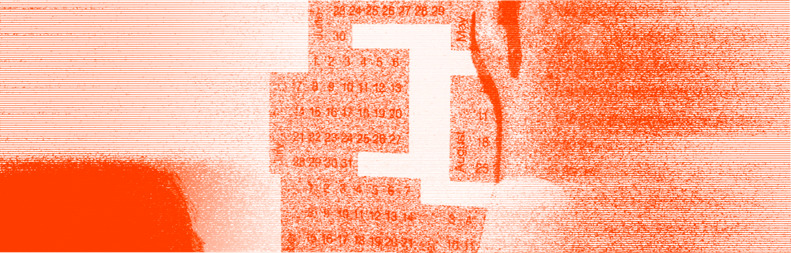

Учебник • Монетизация зинов • Продуктовая линейка вокруг зина
Монетизация зинов
5.2 Продуктовая линейка вокруг зина

1 минута на изучение
Как на основе зина создать полноценную линейку сувенирной и рекламной продукции
Примеры айдентики
2025
Для авторов зинов отличная идея — использовать популярные выпуски как основу для создания дополнительных продуктов. Мерч (футболки, сумки, постеры), открытки или тематические наборы, помогают расширить линейку вашего бренда и привлекать новых покупателей. К тому же, добавляя разнообразие, вы делаете свой бренд более узнаваемым, а аудитория получает возможность поддержать проект и приобрести уникальные вещи.
Создание продуктовой линейки помогает не только в монетизации, но и в укреплении связи с аудиторией. Это позволяет разнообразить предложения для покупателей, чтобы они могли находить что-то подходящее для себя, даже если не покупают сами зины. Также мерч и другие продукты работают как «физическая реклама» зина: когда люди носят вещи с вашим брендом, они рассказывают о нём окружающим.